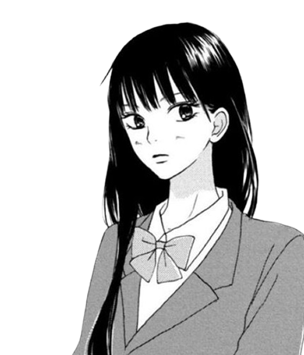
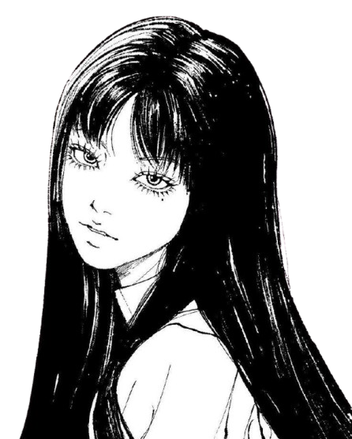
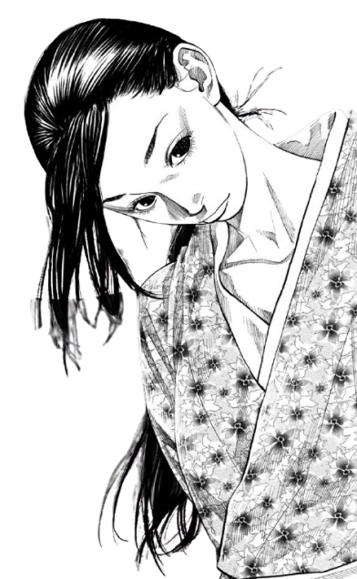
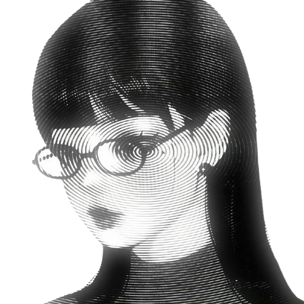

Hi! C'est Laureen
Je suis une fan de manga
J'en lis plusieurs!
Vous pouriez trouver votre genre :
Romance
Aventure
Psychologie
Action
Drame

Shojo
Romance & Émotion

Shonen
Action & Aventure

Seinen
Histoires matures

Shojo
Romance & Émotion
Shonen
Action & Aventure
Seinen
Histoires matures